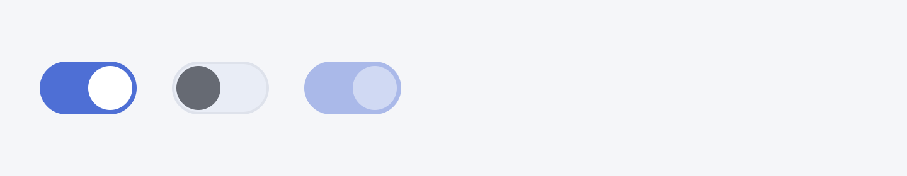
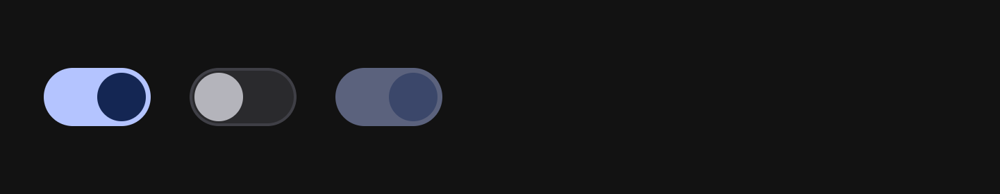

StudioSwitch
이진 설정을 현재 상태와 함께 표시합니다.
- 컴포넌트 ID
studio-switch- 분류
- 선택
- 구현
StudioSwitch·MyWidget/app/src/main/java/com/mywidget/editor/core/designsystem/component/StudioOption.kt:197- 주요 API
- checked, onCheckedChange, enabled, modifier, trackModifier
- 지원 상태
- 켜짐
- 꺼짐
- 비활성
- 읽기 전용
- 변형
- 스위치가 동작 소유
- 행이 동작 소유
- 크기
- 48×48dp 터치
- 44×24dp 트랙
- 20dp 손잡이
- 테마·토큰
- primary/onPrimary
- surfaceVariant
- onSurfaceVariant
- outlineVariant
- 접근성·사용 규칙
- Role.Switch와 현지화된 상태 설명을 제공합니다. 행이 토글을 소유하면 자식 콜백을 비웁니다.
- 공통 사용 여부
- 모든 스튜디오 설정 화면과 데이터 연결 옵션에서 사용
- 설계 품질
- 시각과 터치 영역 분리, 상태 소유권 선택 가능
- 판단
- 유지
- 판단 근거
- 토글 행을 별도 조작으로 중복 읽지 않도록 구성합니다.
- 구현·문서
- 현재 소스 위치와 심볼 확인
- 렌더링
- 네이티브 캡처 있음
코드 예시
Row(horizontalArrangement = Arrangement.spacedBy(12.dp)) {
StudioSwitch(true, {}, Modifier.semantics { contentDescription = "켜짐" })
StudioSwitch(false, {}, Modifier.semantics { contentDescription = "꺼짐" })
StudioSwitch(true, {}, Modifier.semantics { contentDescription = "사용 불가" }, enabled = false)
}Android 네이티브 예시
아래 캡처에 표시된 상태와 기기 조건을 확인했습니다.

411 × 891 dp · 560 dpi · 글꼴 1배 · API 35 · ko-KR
캡처 기준 HEAD
28c96a452 · 소스 지문 2926a62326fe · 2026-11-13T13:54:53.964821Z
411 × 891 dp · 560 dpi · 글꼴 1배 · API 35 · ko-KR
캡처 기준 HEAD
28c96a452 · 소스 지문 2926a62326fe · 2026-11-13T13:54:53.964821Z사용 화면
- 배경·테두리 인스펙터
- 텍스트 인스펙터
- 글자 상세와 세부 조판
- 데이터 인스펙터
- 모양 인스펙터
- 레이어 인스펙터
- 목록 편집·표시·체크 설정
- 수동 목표 편집
- 현재 날짜
- 스톱워치·타이머
- 오늘의 진행률
- 저장 공간 진행률
- 캘린더 일정 목록
- 다음 일정
- 달력 연결 설정
- 위젯 값의 속성·표시 옵션
- 일반 소스 옵션
- 터치 인터랙션 목록
- 터치 동작 1단계 · 대상
- 디자인 시스템 쇼케이스